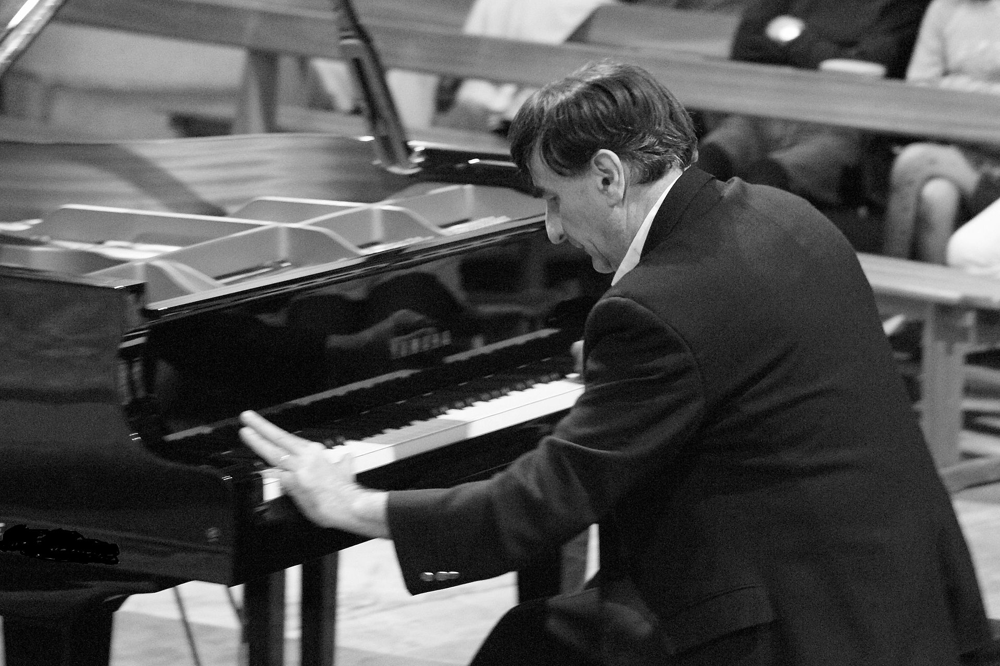
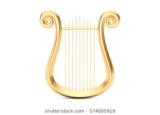

Muzica (din gr. mousikē) este
arta combinării notelor în succesiune și simultan într-o formă
plăcută estetic, organizarea ritmică a acestor note și
integrarea lor într-o lucrare completă. Există numeroase
clasificări ale genurilor muzicale: vocal și instrumental, sacru și laic, cult și comercial („de consum”), rock, de origine afro-americană, muzică electronică etc.

Muzica era o parte importantă a vieţii sociale şi culturale a
Greciei antice. Muzicienii și căntăreții jucau un rol semnificativ in
teatru. Coruri mixte interpretau muzică pentru amuz, petreceri, and sărbători. Instrumentele folosite includeau
flautul, lira. Muzica era importantă în educație, băieții învățând să cânte de la 6 ani. Alfabetizarea muzicii grecești a creat o adevărată
înflorire în domeniul muzicii. Teoria muzicală greacă,care includea moduri muzicale grecești, a devenit baza atât muzicii religioase,cât și clasice din vest.Mai târziu,influențe din Imperiul Roman,Europa de Est și Imperiul Bizantin au schimbat muzica grecească.

Muzica creată de compozitori poate fi ascultată prin mai multe mijloace media; cea mai tradițională metodă este să o ascultăm
live,în prezența muzicienilor(sau ca unul dintre muzicieni) în aer liber sau într-un spațiu închis cum ar fi un
amfiteatru,o sală de concert,o cameră de cabaret sau teatru. Din secolul 20,muzica live poate fi difuzată la radio,televizor,pe internet sau prin intermediul unui CD player sau
MP3 player.Unele stiluri muzicale se concentreaza pe producerea unui anume sunet sau unei anume performanțe,iar altele se concentreaza pe crearea unei înregistrări ce combină diferite sunete ce nu au fost vreodată difuzate live. Înregistrarea până și a stilurilor live esențiale cum ar fi rockul,folosește adesea abilitatea de a edita pentru a crea înregistrări ce ar putea fi considerate "mai bune".